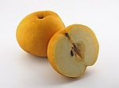

The Benefits of Exercise
Motivation
The Benefits of Exercise
Motivation

Remedies (Take zinc every day during cold/flu season)(Cover your ears, wear a hood)Eat Oranges they work just as good
A farmer, his wife with mule; hooked to a wagon headed to town to pick up supplies.
The mule jumps when he sees a snake, the farmer says
Mule one,
The mule jumps again
when he sees coyotes running in front of the wagon farmer says
Mule two.
The Mule suddenly stops when he approaches a folk in the road in front of a fallen tree,
the farmer says
Mule Three; he gets out of the wagon and with his rifle shoots the Mule dead.
The farmers wife says you ignorant #####, you shot the Mule,
the farmer says wife one.
To combat a cold or the Flu, here are strong remedies to attack the symptoms,
use periodically throughout the first day can bring much needed relief
Rite Aid products or comparables
1. Muscle Rub
2. Chewable, cherry flavored zinc or Ralphs Zinc (Brand name Kroger)
3. PharmAssure Calcium, Magnesium and Zinc with copper
4. Tropicana Orange Juice/Lipton Tea
5. Limes
6. Spinach
7. Progresso (Rich and Hearty Creamy Wild Rice Soup)
**Orange Juice may cause some oral problems Act Anti-cavity Fluoride Rinse (Rite Aid)**
When my symptoms of a cold of the flu start its usually in the throat, chew zinc, cut lime
into wedges and squeeze the lime into orange juice (Tea/Hot Water and Lime) or into mouth
For congestion and stuffy nose, Vapor rub behind the ears, with residue just inside ears,
clears the stuffy head, at bedtime
The soup relieves the congested feeling and will fill you up, it is the perfect
source of energy and it does not take much to put it down (mix with spinach, heated in microwave).
Ben Gay:
Place the Ben Gay on the Chest and Back area, (it will sting for a minute), put a towel on the area
you plan to rest include a separate towel for the pillows and wrap up under a blanket and rest
*Sweat away congestion and stuffy feeling and return to your normal self
There are side effects diarrhea, stomach ache however; in 48 to 72 hours cold is gone, cost minimal
Top of the page